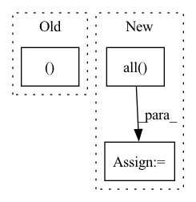

Pattern ID :11420
Before Change
dataset.assert_features()
// Calculate normalized variance per feature based on PCA decomposition
pre_pca_transformer, var_col_order = naive_encoder(dataset)
pca_trans = PCA(n_components=len(var_col_order) // 2, random_state=self.random_state)
n_samples = min(10000, dataset.n_samples)After Change
pca_trans = PCA(n_components=len(features_to_use) // 2, random_state=self.random_state)
fit_data = dataset.features_columns[features_to_use]
// The naive encoder drops columns which are all nans, so fill only them with zeros
columns_all_none = fit_data.columns[fit_data.isnull().all() ]
fit_data = fit_data.drop(columns_all_none, axis=1)
fit_data[columns_all_none] = 0
pca_trans.fit(pre_pca_transformer.fit_transform(fit_data))In pattern: SUPERPATTERN
Frequency: 5
Non-data size: 3
Instances Fragment ID: 38926308
Project Name: deepchecks/deepchecks
Commit Name: 88907b08d6e76b7a912fdd8e7f65df865dc57aa0
Time: 2023-01-03
Author: matan@deepchecks.com
File Name: deepchecks/tabular/checks/model_evaluation/unused_features.py
M Class Name: UnusedFeatures
N Class Name: UnusedFeatures
M Method Name: run_logic(3)
N Method Name: run_logic(3)
M Parent Class: SingleDatasetCheck
N Parent Class: SingleDatasetCheck
M File Name: deepchecks/tabular/checks/model_evaluation/unused_features.py
N File Name: deepchecks/tabular/checks/model_evaluation/unused_features.py
M Start Line: 92
M End Line: 106
N Start Line: 90
N End Line: 107
Before Change
bbox[:, :4] *= img_scale
box_offset = np.stack([offset_y, offset_x] * 2)
bbox -= box_offset
anno["bbox"], anno["cls"] = clip_boxes_remove_empty(bbox, anno["cls"], (scaled_h, scaled_w))
anno["scale"] = 1. / img_scale // back to original
After Change
box_offset = np.stack([offset_y, offset_x] * 2)
bbox -= box_offset
clip_boxes_(bbox, (scaled_h, scaled_w))
valid_indices = (bbox[:, :2] < bbox[:, 2:4]).all(axis=1)
anno["bbox"] = bbox[valid_indices, :]
anno["cls"] = anno["cls"][valid_indices]
anno["scale"] = 1. / img_scale // back to original Fragment ID: 38926311
Project Name: rwightman/efficientdet-pytorch
Commit Name: fc9692c94795623470a8a8218feb6b9444877ba8
Time: 2020-04-24
Author: rwightman@gmail.com
File Name: data/transforms.py
M Class Name: RandomResizePad
N Class Name: RandomResizePad
M Method Name: __call__(3)
N Method Name: __call__(3)
M Parent Class:
N Parent Class:
M File Name: data/transforms.py
N File Name: data/transforms.py
M Start Line: 150
M End Line: 154
N Start Line: 149
N End Line: 156
Before Change
H_new = H_new.cpu().numpy()
// only update H if H_new doesn"t contain any infs or nans
H_vec = np.reshape(H_new, (H_new.size,1 ))
if np.all( (np.logical_or(np.isinf(H_vec),np.isnan(H_vec))) == False ):
self.H = H_new
self.updates += 1After Change
H_vec = torch.reshape(H_new, (torch.numel(H_new),1))
notInf_flag = torch.all(torch.isinf(H_vec) == False)
notNan_flag = torch.all( torch.isnan(H_vec) == False)
dbg_print_1("notInf_flag = {}".format( notInf_flag ) )
dbg_print_1("notNan_flag = {}".format( notNan_flag ) )
// if torch.all( (torch.logical_or(torch.isfinite(H_vec),torch.isnan(H_vec))) == False ):
if notInf_flag and notNan_flag: Fragment ID: 38926297
Project Name: sun-umn/pygranso
Commit Name: cde0984020653fa77d975293fe823580189b5cce
Time: 2021-09-08
Author: 52502144+Buyun-Liang@users.noreply.github.com
File Name: private/bfgsHessianInverse.py
M Class Name: H_obj_struct
N Class Name: H_obj_struct
M Method Name: update(5)
N Method Name: update(5)
M Parent Class:
N Parent Class:
M File Name: private/bfgsHessianInverse.py
N File Name: private/bfgsHessianInverse.py
M Start Line: 92
M End Line: 97
N Start Line: 91
N End Line: 105
Before Change
prev_rejected = not accepted
rk_state = (fnew, tnew, ynew, h)
return rk_state, t1_achieved
class RK23(RKAdaptiveStepSolver):
error_estimator_order = 2
After Change
prev_rejected = not accepted
rk_state = (fnew, tnew, ynew, h)
t1_achieved_all = bool(torch.all( t1_achieved) .cpu().detach().item())
return rk_state, t1_achieved_all
class RK23(RKAdaptiveStepSolver):
Fragment ID: 38926300
Project Name: xitorch/xitorch
Commit Name: c6f0785664d60d1310778d43f14a3464660ea4d9
Time: 2021-12-30
Author: firman.kasim@gmail.com
File Name: xitorch/_impls/integrate/ivp/adaptive_rk.py
M Class Name: RKAdaptiveStepSolver
N Class Name: RKAdaptiveStepSolver
M Method Name: _single_step(3)
N Method Name: _single_step(3)
M Parent Class: object
N Parent Class: object
M File Name: xitorch/_impls/integrate/ivp/adaptive_rk.py
N File Name: xitorch/_impls/integrate/ivp/adaptive_rk.py
M Start Line: 85
M End Line: 122
N Start Line: 125
N End Line: 165
Before Change
// FIXME haven"t tested this path since not currently using dataset annotations for train/eval
bbox = anno["bbox"]
bbox[:, :4] *= img_scale
anno["bbox"], anno["cls"] = clip_boxes_remove_empty(bbox, anno["cls"], (scaled_h, scaled_w))
anno["scale"] = 1. / img_scale // back to original
After Change
bbox = anno["bbox"]
bbox[:, :4] *= img_scale
clip_boxes_(bbox, (scaled_h, scaled_w))
valid_indices = (bbox[:, :2] < bbox[:, 2:4]).all(axis=1)
anno["bbox"] = bbox[valid_indices, :]
anno["cls"] = anno["cls"][valid_indices]
anno["scale"] = 1. / img_scale // back to original Fragment ID: 38926302
Project Name: rwightman/efficientdet-pytorch
Commit Name: fc9692c94795623470a8a8218feb6b9444877ba8
Time: 2020-04-24
Author: rwightman@gmail.com
File Name: data/transforms.py
M Class Name: ResizePad
N Class Name: ResizePad
M Method Name: __call__(3)
N Method Name: __call__(3)
M Parent Class:
N Parent Class:
M File Name: data/transforms.py
N File Name: data/transforms.py
M Start Line: 99
M End Line: 101
N Start Line: 95
N End Line: 100